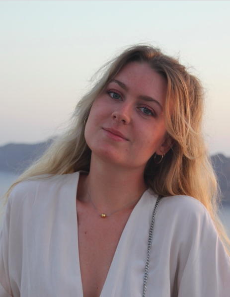
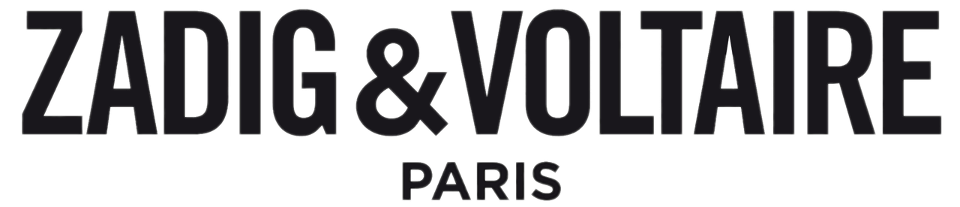
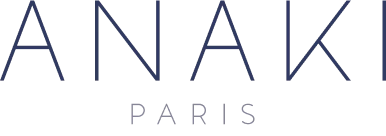

Emma POULLIN
- emma.poullin@gmail.com
- 0614138761
- 217 rue de Tolbiac 75013 Paris
- Profil Linkedin
CANDIDATURE POUR UNE ALTERNANCE DANS LE CADRE DU MASTÈRE SPECIALISÉ DE L'IFM
Diplômée en juillet 2022 du Programme Grande Ecole d'Audencia Business School et admise au Mastère Spécialisé Management de la Mode & du Luxe de l'Institut Français de la Mode, je suis à la recherche d'une alternance à partir de Septembre 2022 dans le Merchandising ou le Marketing Produit
Ayant déjà une sensibilité à l’industrie de la mode et du luxe et des connaissances dans ce secteur grâce à différentes expériences professionnelles et associatives ainsi qu'à ma passion pour la couture, je souhaite aujourd'hui enrichir mon parcours.
Très sensible au produit, j'ai en effet la sensation de m’en être éloignée au cours de mes études. J’aimerais ainsi profiter de cette opportunité afin de stimuler ma créativité et renouer avec ce qui me passionne tout en continuant de développer mon esprit analytique. En effet, mon appétence pour les chiffres sera également un atout pour ma future expérience.
FORMATION
Mastère Spécialisé Management de la Mode et du Luxe, Institut Français de la Mode, 2022-2023, Paris, France
- Programme en alternance à partir de Septembre 2022
Master 2 en management, Audencia Business School 2018-2022, Nantes, France
- Programme Grande Ecole, Majeure en Marketing Digital
- Accréditée AACSB, EQUIS, AMBA
- Top 6 des écoles de management françaises
Classe préparatoire aux grandes écoles, 2016-2018, Lycée Michel Montaigne, Bordeaux, France
Baccalauréat Série S option Mathématiques Mention Très Bien, 2016, Lycée François Magendie, Bordeaux, France
EXPÉRIENCES PROFESSIONNELLES
Janvier à Juillet 2022, France - Stage de 6 mois en tant qu'Assistante Digital Merchandiser
ysl.com
- Élaboration des rapports quotidiens et hebdomadaires - analyse des ventes et des best-sellers
- Mise à jour et analyse des stocks sur les différents sites (Inventory, Sold Out Reports etc.)
- Gestion opérationnelle du catalogue produit (préparation et lancement des collections, descriptifs, visual merchandising)
- Participation aux formations showroom
- Insertion et vérification des commandes passées pendant le showroom
- Aide à la réalisation des Buying Strategies en fin de session d’achat

Septembre à Décembre 2020, France - Stage de 4 mois en tant qu'Assistante E-Commerce
zadigetvoltaire.com
- Optimisation du e-merchandising et des catégories produits en fonction des ventes
- Reporting hebdomadaire et mensuel des ventes : mise en place d'actions correctives sur le e-shop
- Création du catalogue produit digital (descriptifs produits)
- Mise en place des opérations promotionnelles (import des prix spéciaux, e-merchandising)
- Suivi des stocks e-shop : réception des transferts sur le ERP et demande de réassort
- Développement d'un outil Excel automatisé d'analyse des ventes
- Veille concurrentielle des pratiques du E-Commerce et de la communication

Janvier à Juillet 2020, France - Stage de 6 mois en tant qu'Assistante marketing digital
anakiparis.fr canal-saint-martin.com
- Assistante marketing digital pour deux marques spécialisées dans la chaussure et la maroquinerie : Anaki Paris et Canal Saint Martin
- Animation des sites Internet et lancement des nouvelles collections
- Mise en place du plan de communication
- Participation à l'organisation des shootings de campagne
- Mise en place d'une stratégie SEO
- Suivi de l'approvisionnement des sites Internet (logistique)
- Gestion des ventes privées
- Veille concurrentielle des pratiques du E-Commerce et de la communication
- Gestion de la relation client et des demandes SAV
EXPÉRIENCES ASSOCIATIVES
MODENCIA
2019, Nantes - Responsable du pôle mode au sein de l'association Bureau des Arts qui démocratise les arts à Audencia Page Instagram
- Participation aux Trophées de la Mode - concours de mode national entre écoles de commerce
- Création des costumes pour la Comédie Musicale de l'école
- Expériences dans le mannequinat
OMEGA
2019, Nantes, Bureau des Arts - Co-responsable de la première édition
- Compétition artistique entre étudiants nantais. Regroupe les écoles Centrale Nantes, Ensa et Audencia Business School Page Facebook
- Principalement en charge de l'identidité visuelle et de la décoration
CENTRES D'INTÉRÊT
- Couture
- Mode éthique
- Photographie
- Voyages
Lors de mes études, je décide de me mettre à la couture, par passion mais également par conviction. Coudre mes propres vêtements me permet d'avoir une consommation plus réfléchie de la mode et d'aller à l'encontre du phénomène de la "fast fashion". Je peux désormais me rendre compte de tout le travail derrière la confection d'un vêtement et en apprendre davantage sur les matières et les techniques. Loin d'être parfaites, mes réalisations me procurent de la joie et de la fierté tant dans le processus de création que lorsque je les porte.
En voici quelques unes: